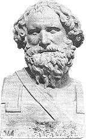

ARCHIMEDES 287 SM-212 SM
Yang
namanya ilmuwan itu tentu pintar. Kalau tidak, buat apa
disebut ilmuwan? Tetapi Archimedes --menurut ukuran dunia
lama-- bukan pintar sekedar pintar tetapi paling pintar di
bidangnya, bidang matematika. Dia kadangkala dianggap penemu
prinsip pengungkit dan konsep gaya berat tertentu.
Tetapi nyatanya pengungkit itu sudah dikenal dan
digunakan orang berabad sebelum ada Archimedes. Tampaknya
dia orang pertama yang jelas menerangkan formula hal-ihwal
pengungkit meskipun insinyur-insinyur mesin sudah berulang
kali dan mampu menggunakan pengungkit jauh sebelum
Archimedes.
Konsep tentang kepadatan (berat per volume unit) dari
sesuatu benda sebagai lawan berat keseluruhan sesuatu obyek
tampaknya sudah diketahui sebelum Archimedes dan mahkota
(cerita tentang dia melompat dari tempat mandinya dan
berlari-lari sepanjang jalan sambil teriak "Eureka"), apa
yang ditemukan Archimedes bukanlah barang baru melainkan
sekedar pemakaian terang-terangan dari konsep yang sudah
dikenal terhadap sesuatu masalah spesifik.
Selaku matematikus, tak syak lagi Archimedes memang
terkemuka. Buktinya, dia hampir sampai pada memformulasikan
"kalkulus integral," lebih dari delapan belas abad sebelum
Isaac Newton berhasil melaksanakannya. Malangnya, sistem
yang mudah untuk melukiskan lambang-lambang jumlah masih
kurang di masa Archimedes. Begitu pula malangnya, tak ada
pelanjut-pelanjutnya yang cukup bermutu selaku matematikus.
Akibatnya, kebrilianan pandangan matematika Archimedes
menjadi semakin berkurang daya cekamnya seperti sebelumnya.
Karena itu tampak jelas sekali, betapa pun mengagumkan bakat
Archimedes, pengaruh riilnya tidak cukup besar untuk
meyakinkan dia bisa dimasukkan ke dalam barisan daftar yang
seratus.
|